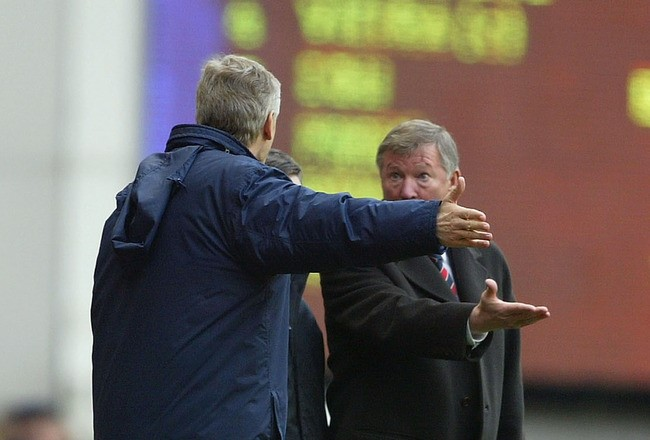

Chương 29

ir Ferguson của thế kỷ 21 có gì khác với chàng Alex thuở mới tập tễnh bước vào nghiệp HLV? Xét về lòng yêu nghề và sự tận tâm trong công việc thì chẳng có gì đổi thay. Tuy buổi tối không bao giờ đi ngủ trước nửa đêm, sáng ra, hễ cứ năm giờ hay năm rưỡi là ông thức giấc. Mặt trời chưa mọc, ông đã có mặt ở trung tâm huấn luyện, tập thể dục nửa giờ, ăn sáng, rồi bắt đầu ngồi vào bàn giải quyết công việc. Chẳng có gì là Sir Alex không lưu tâm đến. Ông vẫn bỏ hàng giờ ngồi nghiên cứu băng ghi hình những trận đấu của đối thủ, liên tục đi đó đi đây “xem giò xem cẳng” cầu thủ đối phương. Nghe ở đâu có cầu thủ “nhí” triển vọng, ông vẫn đích thân đến xem, và nếu hài lòng, sẽ tới tận nhà cha mẹ cậu ta để xin phép được ký hợp đồng. Sau mỗi trận đấu, ông không bỏ thói quen đi khảo sát mặt cỏ. Các nhân viên phụ trách sân bãi ai cũng trống ngực thình thình trước cảnh HLV trưởng chậm rãi dò từng bước một trên sân, như một nhà điều tra đi khám nghiệm hiện trường, đôi khi nhổ cả cỏ lên săm soi, ngửi ngửi. Với kinh nghiệm hàng chục năm trong nghề, Sir Alex là một chuyên gia về cỏ. Ông biết rõ cỏ nên dài chừng nào là lý tưởng, mỗi ngày cần bao nhiêu nước, bao nhiêu nắng. Chỉ cần chất lượng cỏ xấu đi một chút, nhân viên dưới quyền sẽ “không yên”.
Tuy vậy, do tuổi đã cao, ông không thể ôm đồm quá nhiều như trước. Những buổi tập hàng ngày đa phần đều do trợ lý phụ trách. Công tác đào tạo trẻ cũng do các trợ lý lo, chứ Sir không còn trực tiếp giám sát (có lẽ vì vậy mà các lứa cầu thủ về sau không được như thế hệ vàng?[1]). Vả lại, bước sang thế kỷ mới, dưới quyền Sir Alex có đến hàng chục nhân viên, mỗi người mỗi việc, từ nhà dinh dưỡng đến người đo thị lực, từ thợ mát xa đến bác sỹ chuyên khám chân, HLV trưởng có thể yên tâm giao phó trách nhiệm cho họ.
Vẫn bận bịu, nhưng Sir Alex đã biết tận hưởng cuộc sống hơn trước, không như cái thời rời sân bóng ra, liền chạy về nhà hàng, thắt tạp dề đứng xào nấu. Từ thập niên 1990, Sir bắt đầu làm quen với rượu vang Pháp và tập chơi đàn. Những lúc có đôi chút thời gian rảnh rỗi, ông tìm đến với ẩm thực và nghệ thuật như những thú vui tao nhã.
Song nói đến giải trí, thì từ trẻ đến già, Sir Alex vẫn mê nhất trò đỏ đen. Người ta hay ghép cờ bạc – rượu chè thành một đôi, riêng ông tách ra làm hai. Uống rượu hại người, cầu thủ cần tránh, còn cờ bạc chẳng ảnh hưởng đến thể lực, thích chơi cứ chơi. Mỗi lần ngồi xe buýt hay máy bay di chuyển đến sân đối phương, ông chuyên gầy sòng đánh bài ăn tiền với học trò. Dĩ nhiên chỉ vui là chính, chứ tiền đặt không bao nhiêu.
Mỗi cuối tuần, Sir Alex đều chơi cá cược: Cá đủ thứ, từ đá banh, đến đua chó, đua ngựa. Dân nhà cái đều là chỗ thân quen của ông. Theo lời kể của Roy Keane, hồi năm 2000, trong trận chung kết Euro giữa Ý và Pháp, anh đặt 5000 bảng cho Ý, bị thua sạch. Vừa mới hôm sau ra sân tập, ông thầy đã hỏi ngay: Sao dốt vậy? Đặt đến 5000 cho Ý? Thì ra Keane vừa đặt cược, nhà cái đã gọi điện, thông báo cho Sir Alex biết ngay!
Từ chỗ chỉ đánh cá, năm 1997, Sir Alex bắt đầu làm chủ ngựa. Sir không làm thì thôi, hễ đã làm, thường đều thành công. Ngựa do ông sở hữu thường xuyên thắng giải, đem lại cho chủ thu nhập cao không kém lương HLV. Sau cú ăn ba năm 1999, ông đứng ra thành lập CLB…đua ngựa Manchester United, hy vọng thu hút được 2000 hội viên. Tuy nhiên, số hội viên sau cùng chỉ lên tới 800, khiến CLB phải giải thể.
Đua ngựa là trò giải trí quý tộc ở Anh. Nhờ nó, Sir Alex có dịp làm quen với những nhân vật máu mặt, trong đó có hai tay tài phiệt John Magnier và JP McManus. Khi Magnier và McManus đầu tư vào United PLC, trở thành cổ đông lớn thứ hai, chỉ sau BSkyB, vị thế của Sir chỉ qua một đêm bỗng lên cao chót vót. BLĐ CLB nhìn Sir lấm lét, bởi ông nay là bạn chí cốt của hai “sếp lớn”, chứ không chỉ đơn thuần là một HLV dưới quyền họ. Đâu đó còn lan truyền những tin đồn: Hai sếp lớn sẽ mua hẳn United PLC, rồi bổ nhiệm Sir Alex làm giám đốc điều hành.
Năm 2001, Magnier giới thiệu cho Sir Alex chú ngựa đua hai tuổi mang tên “Rock of Gibraltar” (gọi tắt là The Rock). Sir bỏ ra 120 000 bảng, giành quyền làm đồng chủ nhân ngựa; chủ còn lại chính là vợ của Magnier. 120 000 là giá rất cao, nhưng tính lại vẫn còn lời chán, vì The Rock thắng hết giải này đến giải khác, đem về cho ông đến gần 1.3 triệu bảng tiền thưởng. Ngoài tiền ra, Sir Alex còn được trao giải Chủ Ngựa Của Năm. Với giải này, ông hoàn thành cú hattrick danh hiệu, do trước đó đã nhận phần thưởng HLV Xuất Sắc nhờ cú ăn ba bóng đá, và Sách Hay Nhất cho hồi ký Quản Lý Đời Tôi. Thế nhưng, cũng vì The Rock mà ông gặp rắc rối, như ta sẽ thấy về sau.
Về già, có người trở nên trái tính trái nết, người khác lại hiền đi. Sir Alex thuộc về dạng thứ hai. “So với trước kia, tôi hiền như con mèo”, ông tự trào. Ngày xưa, cầu thủ chỉ cần chuyền hỏng một đường cũng khiến Sir nổi điên. Bây giờ, ông dễ dãi hơn với những lỗi nhỏ. Về tác phong cầu thủ cũng vậy, ông không còn quá nghiêm khắc. Học trò có nhuộm tóc, để tóc hơi dài, hay ăn mặc theo những mốt thời trang hiện đại cũng không sao. Nói là nói vậy, chứ nếu ai lờn mặt thầy, thì “máy sấy tóc” vẫn còn đó, sẵn sàng hoạt động hết công suất.
Nếu với cầu thủ, Sir Alex có hiền hơn đôi chút, thì với nhà báo, thái độ ông trái ngược. Sir chưa bao giờ ưa giới truyền thông. Điều ấy dễ hiểu, vì truyền thông nước Anh thuộc loại…thiên hạ đệ nhất lá cải, chuyên tung tin giật gân để câu khách một cách rẻ tiền. Những năm đầu ở Old Trafford, khi ghế HLV còn chưa vững, Sir buộc phải giữ quan hệ tương đối nồng ấm với báo giới. Đến thập niên 1990, lúc Manchester United đã vươn lên vị trí số một nước Anh và được yêu thích trên khắp toàn cầu, ông cảm thấy không cần lấy lòng họ nữa.Theo lệnh Sir Alex, nhà báo không được phép xâm nhập đường hầm sân Old Trafford tìm cầu thủ để phỏng vấn, và chỉ khi có giấy phép đặc biệt mới được vào trung tâm huấn luyện của đội. Ghét ký giả nào, Sir chửi thẳng vào mặt. Ghét tờ báo nào, ông cấm cửa, không cung cấp thông tin, ra lệnh cầu thủ không tiếp xúc với báo đó. Truyền thông đâm ra sợ Sir Alex một phép, vì làm mất lòng ông thì không có tin đăng, mà không có tin đăng về Manchester United thì ăn nói làm sao với độc giả? Giờ đây, Quỷ Đỏ đã lớn đến mức độ báo chí cần họ, hơn là họ cần báo chí. Daily Mail và BBC, hai cơ quan truyền thông hàng đầu Anh Quốc, bị Sir “cấm vận” một thời gian dài vì tội đưa tin “chống United”. Mãi đến khi họ lên tiếng xin lỗi công khai, lệnh cấm mới được dỡ bỏ.
Trong các buổi họp báo, chẳng ai đoán trước được thái độ Sir Alex. Vừa vui vẻ. pha trò đó, ông có thể nổi giận lên ngay. Mỗi lần ông nổi giận là mỗi lần cánh ký giả thót tim. Taylor (2011) thuật lại quang cảnh trong một buổi họp:
-Anh mà hỏi một câu khiến Alex không hài lòng, ông ta liền đứng lên, cúi mình về phía trước, miệng rủa xả như súng liên thanh. Mỗi lần giận như thế kéo dài vài giây thôi, nhưng anh cảm thấy lâu hơn thế nhiều. Mắt anh cụp xuống, không dám nhìn thẳng, bàn tay anh túa đẫm mồ hôi, miệng anh khô khốc như vừa ăn mạt cưa. Khi ông ta mắng xong, anh chỉ biết cúi đầu, nhìn xuống đất, cảm thấy mình yếu đuối khôn tả.
Chẳng những mắng mà thôi, có lần Sir Alex còn túm cổ một anh phóng viên xấu số, rồi chỉ hướng… nhà cầu, quát “Đi vào đấy mà ngồi”. Nếu cần, ông không ngại hất đổ hết máy ghi âm trên bàn, tống toàn bộ nhà báo ra khỏi cửa.
Đỉnh điểm của sự miệt thị giành cho báo giới diễn ra vào năm 2006. Khi phóng viên tờ lá cải The Sun hỏi về tin đồn ở Old Trafford có chuột, Sir Alex nhếch mép:
-Chẳng biết ngoài sân có chuột không, nhưng trong phòng này đang có một lũ chuột đầu đen to xù đấy thôi!
Lần khác, ông quát thẳng vào mặt các phóng viên:
-Lũ chúng bay là bọn ký sinh, bám trên lưng CLB này mà bán báo ăn tiền!
Những lúc quan hệ với báo giới xuống đến mức thấp nhất, Sir Alex “cấm vận” toàn bộ các cơ quan truyền thông, chỉ nhận lời xuất hiện trên MUTV, kênh truyền hình riêng của Manchester United. Thậm chí, Sir bất chấp quy định của Liên Đoàn Bóng Đá, không thèm dự họp báo sau mỗi trận đấu. LĐ cũng đành ngậm bồ hòn làm ngọt, ngó lơ chỗ khác. Những lúc ấy, phóng viên các báo không còn cách nào khác, đành thủ sẵn giấy bút, đợi đến giờ Sir lên trả lời phỏng vấn MUTV, cấp tốc ghi nội dung, sau đó “xào nấu” lại thành bài của riêng mình.
Đa số phóng viên đều khép nép trước Sir Alex. Không đợi Sir phải nổi giận, họ luôn tự kiểm duyệt, cố gắng hết sức tránh làm mất lòng ông. Song đa số không phải là tất cả, một vài người vẫn “dũng cảm đấu tranh” tới cùng. Sau đây là biên bản ghi lại một trong những cuộc tranh cãi đình đám nhất giữa Sir Alex và phóng viên:
-Alex, có phải ông sắp rời United sang làm HLV cho Glasgow Rangers?
-Tôi không đi đâu cả. Đã rõ chưa? Đó là một tin đồn ngu xuẩn, tôi không có thời giờ cho những thứ như thế.
-Nhưng phía Rangers đã khẳng định tin này.
-Họ chẳng khẳng định gì cả.
-Có mà. Họ thông báo cho phóng viên ở Scotland đấy thôi.
-Đã bảo không có.
-Có.
-Nói láo!
-Tôi không nói láo!
-NÓI LÁO!
-Đã bảo không láo!
-Bảo láo thì là láo!
-Tôi láo à? Tuần trước ông mới bảo Roy Keane sẽ ở lại United, rồi 30 phút sau, thông báo anh ta sẽ ra đi. Ai mới là người nói láo đây?
-CẬU VẪN LÁO! RANGERS CHẲNG KHẲNG ĐỊNH GÌ CẢ!
-Có mà!
-Không.
-Có.
-Không.
-Có.
-Cứ lằng nhằng thế này cả ngày à?
-Thích thì chiều đấy, cả ngày thì cả ngày. Thật là cái tin đồn nực cười.
-Chả có gì mà nực cười.
-Có.
-Không.
-Có.
-Không.
Đến lúc này thì cả phòng phá ra cười. Diana Law, thư ký báo chí của United, phải bước ra can thiệp “Buổi họp báo hôm nay đến đây là kết thúc. Xin cảm ơn quý vị”.
Cuộc đấu khẩu trên, tuy vậy, chủ yếu mang tính khôi hài. Lần đụng độ năm 2007 giữa Sir Alex và phóng viên Geoff Shreeves của kênh truyền hình Sky nghiêm trọng hơn nhiều. Shreeves đang phỏng vấn Cristiano Ronaldo thì Sir xông ra, bảo anh phải “cút xéo”. Shreeves nhất quyết không “cút”, vì “phỏng vấn cầu thủ có gì là sai?” Sir đuổi bốn, năm lần, Shreeves cứng cỏi, lấy lý lẽ cự lại. Tưởng như hai người sắp xông vào đánh lộn đến nơi.
Nóng nảy là thế, nhưng như ta từng thấy trong những chương trước, Sir Alex rất thích những người cứng cỏi. Ai cũng sợ ông, nên khi thoảng hoặc có kẻ dám chống, ông lại ấn tượng. Cãi nhau xong, Shreeves những tưởng anh, thậm chí là Sky, sẽ bị “cấm vận” ít nhất vài năm, chẳng ngờ chỉ sau đó vài ngày, Sir đồng ý cho anh một cuộc phỏng vấn độc quyền.
Thái độ của báo giới đối với Sir Alex tương tự như vậy. Cánh nhà báo kể cũng phức tạp. Những kẻ chuyên đi xun xoe, nịnh hót họ thì họ khinh bỉ, còn ai đó không coi họ ra “cái thá” gì, họ lại nể trọng. Tuy bị Sir Alex xài xể hàng ngày, song phóng viên nói chung vẫn tôn trọng ông, ít ai vì thù riêng mà đem ông lên mặt báo công kích. Ngược lại, Steve McClaren sau khi rời Old Trafford, lên làm HLV trưởng ĐTQG Anh, lúc nào cũng tìm cách lấy lòng ký giả, nhưng vẫn bị họ coi thường.
Đến đây, cần mở một dấu ngoặc: Sir Alex không ưa truyền thông, không có nghĩa là ông ghét tất cả nhà báo. Với một số phóng viên được coi là “đứng đắn”, Sir đối xử rất thân tình. Khi David Meek của tờ Manchester Evening News phải vào viện phẫu thuật, người đầu tiên đến thăm Meek không phải người thân hay bạn bè nào khác, mà chính là Sir Alex. John Bean của Daily Express cũng được Sir coi như người nhà. Dịp Bean hồi phục sau cơn nhồi máu cơ tim, Sir gửi ông tấm thiệp với lời lẽ trìu mến “Ôi tên vũ công già, mi đã làm chi đời mi?”
Nhân bàn chuyện Sir Alex và nhà báo, xin thuật luôn về quan hệ giữa ông và các HLV khác. Khi còn chơi bóng, Alex Ferguson là chủ tịch hội cầu thủ, luôn đấu tranh cho quyền lợi giới “quần đùi áo số”. Đến lúc trở thành HLV, ông cũng hết sức quan tâm đến đồng nghiệp. Dù thân hay sơ, hễ đồng nghiệp nào bị sa thải, ông liền gọi điện chia buồn; đồng nghiệp nào giành cúp, hoặc dẫn dắt đội bóng lên hạng thành công, ông gửi thư chia vui. Liverpool là đại kình địch của United, nhưng khi họ vô địch C1 lần thứ năm, Sir Alex vẫn viết thư chúc mừng Rafael Benitez. Với những HLV trẻ mới vào nghề, cần lời khuyên, không bao giờ Sir tiếc lời chỉ bảo[2]. Vì vậy, trong Hiệp Hội HLV, ai ai cũng kính trọng Sir, coi ông như một trưởng lão.
Duy đối với một vài HLV bị coi là đối thủ cạnh tranh trực tiếp, Sir Alex hay chĩa mũi dùi tấn công. Arsene Wenger của Arsenal được Sir giành cho nhiều lời “bất hủ”:
-Wenger là kẻ học việc. Hãy đi về Nhật mà ý kiến với ý cò!
-Thông minh! Thiên hạ vẫn bảo Wenger thông minh! Nói được năm ngoại ngữ cơ đấy! Úi chà chà, tôi biết có thằng nhóc 15 tuổi người Bờ Biển Ngà cũng nói năm thứ tiếng, kém chi ai đâu!
-Không biết dạy học trò thì phải xin lỗi…Nhưng mà thôi, người như Wenger làm gì biết xin lỗi!
Nghe nặng lời thật, nhưng chẳng qua chỉ là đòn tâm lý, chọc tức đối thủ, chứ Sir Alex không thù hằn gì Giáo Sư. Ngày xưa, Newcastle còn là đối thủ cạnh tranh chức VĐ với United, Sir chuyên chọc cho Kevin Keegan tức sùi bọt mép, đến lúc Arsenal thế chỗ Newcastle, Sir lại chọc Arsene Wenger.Từ khi Arsenal thất thế thì Sir không nói gì nữa.
Độc giả có lẽ sẽ hỏi: Thế sao không thấy Sir Alex khích tướng Jose Mourinho? Để giải đáp câu này, nên biết rằng Sir nhìn người mà chọn cách ứng xử. Ông khích Wenger vì biết Wenger dễ nổi xung, không khích Mourinho vì biết có khích cũng chẳng tác dụng. Mourinho là một bậc thầy chuyên chơi đòn tâm lý như Sir Alex, chẳng dễ gì làm ông ta nổi giận mất khôn. Về phía Mourinho, HLV người Bồ Đào Nha này cũng chẳng bao giờ đụng chạm Sir. “Tôi và ông ấy chẳng ai sợ ai”, Mourinho nói, “Cạnh khóe nhau chỉ vô dụng. Lời nói của tôi không thể ảnh hưởng đến ổng. Ổng thủ chắc lắm, ngoại lực không tác động được.”
Cũng nên nói thêm: Khi Wenger mới đến Anh, Sir Alex đã mở rộng vòng tay chào đón, nhưng HLV người Pháp, với bản tính khép kín, không chấp nhận vòng tay ấy. “Tôi luôn muốn tìm hiểu rõ hơn về Wenger”, Sir Alex bày tỏ, “Người biết Wenger bảo ông ta cũng tốt lắm, song tôi chẳng biết thế nào. Mỗi khi tôi đến gặp ông ta, ông ta cứ như muốn đóng sập cửa lại, không muốn nói chuyện.” Sau trận đấu, khi Sir mời đi uống vài ly, Wenger đều từ chối[3]. Mourinho thì trái ngược, hễ gặp Sir là “sếp sếp em em”, lại hay mua rượu biếu ông nữa.
Dĩ nhiên, Mourinho mời rượu Ferguson thì cũng như Ferguson mời rượu Di Stefano ngày xưa. Sir Alex thừa biết “trò mèo” của chàng đồng nghiệp trẻ. “Rượu chú Mou”, ông nói, “uống vào như uống thuốc tẩy”.

Sir Alex tranh cãi với Arsene Wenger (ảnh: Bleachreport.com)
[1] Cần lưu ý: Các lứa về sau không bằng thế hệ vàng, không có nghĩa họ là những sản phẩm hỏng. Cầu thủ chưa đủ chuẩn thi đấu cho Manchester United vẫn thừa sức chơi cho các CLB khác. Mỗi năm, United thu lợi nhuận không nhỏ từ việc bán các cầu thủ trẻ không đạt chuẩn ấy.
[2] Không chỉ người mới vào nghề mới cần lời khuyên của Sir Alex. Nhiều CLB có thói quen nhờ Sir tư vấn trong việc chọn HLV. Mỗi khi LĐBĐ Anh và Scotland tuyển HLV mới cho ĐTQG, họ cũng đều hỏi ý Sir.
[3] Arsene Wenger vốn không thích giao thiệp, ít khi ra ngoài. Ở London suốt từ 1996, ông vẫn không thuộc đường đi nước bước trong khu trung tâm thành phố. Thậm chí vợ rủ đi ăn, ông cũng chỉ đồng ý đi nhà hàng gần nhà, để còn kịp về xem TV.